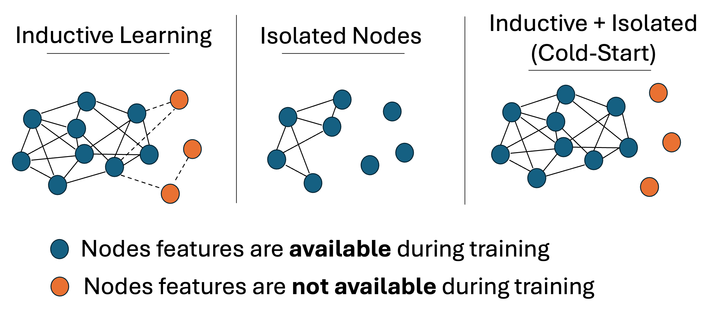

01
Strict cold-start setting

Many graph learning models assume that the target node has an observed neighborhood at inference time. This assumption breaks in strict cold-start prediction, where a newly arriving node is unseen during training and has no incident edges when the prediction must be made.
In this setting, the node feature vector is available, but the graph structure around the node is hidden. Therefore, the model cannot directly use standard message passing or neighborhood aggregation for the cold-start node.